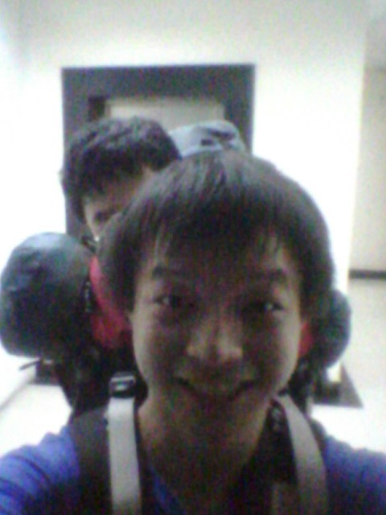

[转寄/推荐][转贴][删除][修改][设置可RE属性][上一篇][返回讨论区][下一篇][回文章][同主题列表][同主题阅读][从这里展开]
发信人: hemind(hooft), 信区: outdoor 标 题: 半脊登山队训练 - 0614 #1P 发信站: 饮水思源 (2014年06月15日01:05:03 星期天) 半脊登山队训练 - 0614 训练人员： 冯晓远 何敏 训练内容： 跳绳 4首歌 负重爬楼 13趟约1小时 西班牙说好的5：0呢？听了一天的学术大会报告，晚上补了会儿觉就又开始爬楼了~ 今天发现原来8楼也有一个灰色垃圾桶，咦，这就到11楼？定神一看，8楼。。。 还发现9楼的哪个机器其实就是一个废弃空调； 现在爬起来更加从容啦，节奏就是8楼前无压力，之后每一楼都有一个明确的目标， 这样爬起来相当的爽；而且今天还经常是22的节奏，左腿也不搓了哈哈哈！ 听说下周末有世界杯。 不早开始了嘛？ 我说的是攀岩....2014 IFSC 世界杯 - 山东.海阳站 直播地址：http://www.cmaol.com/#  screen.width - 200){this.width = screen.width - 200}"> |
[转寄/推荐][转贴][删除][修改][设置可RE属性][上一篇][返回讨论区][下一篇][回文章][同主题列表][同主题阅读][从这里展开]